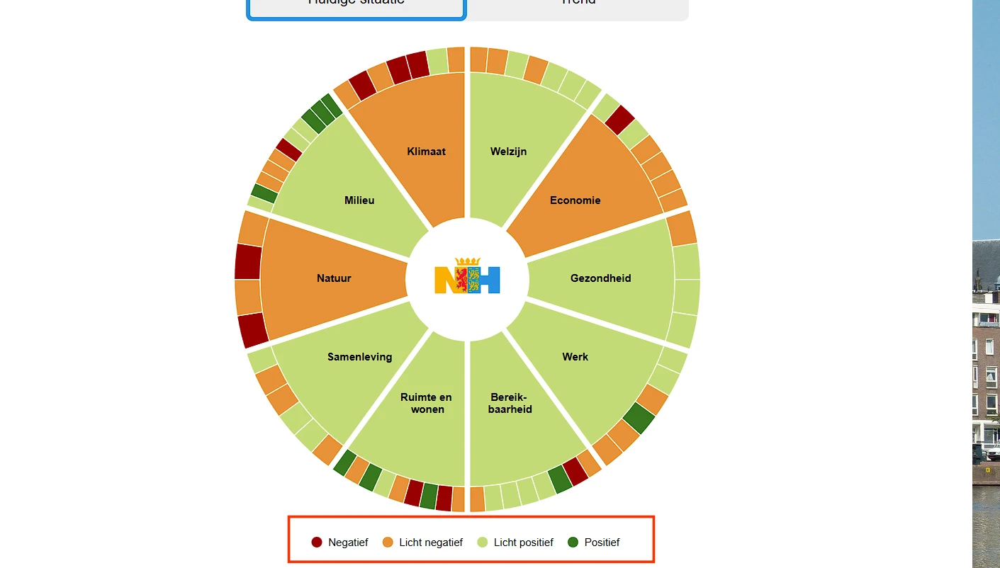
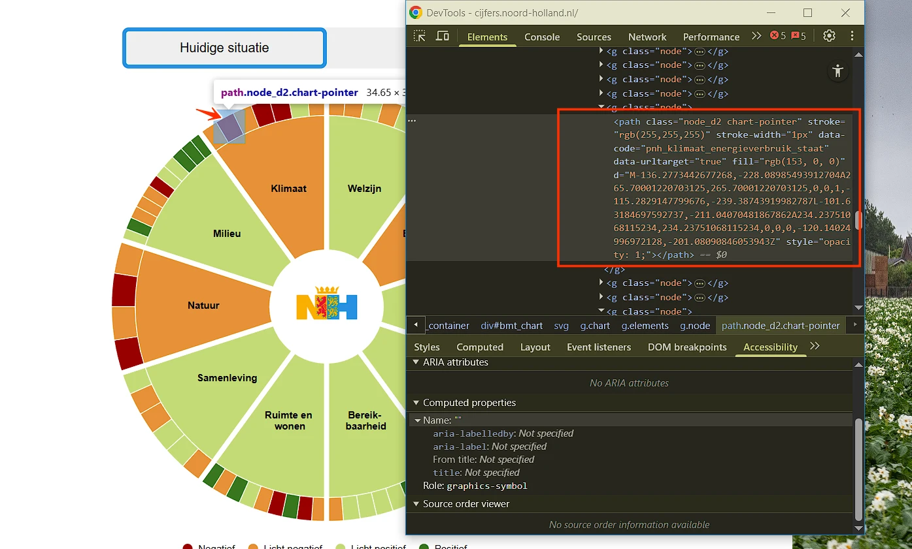
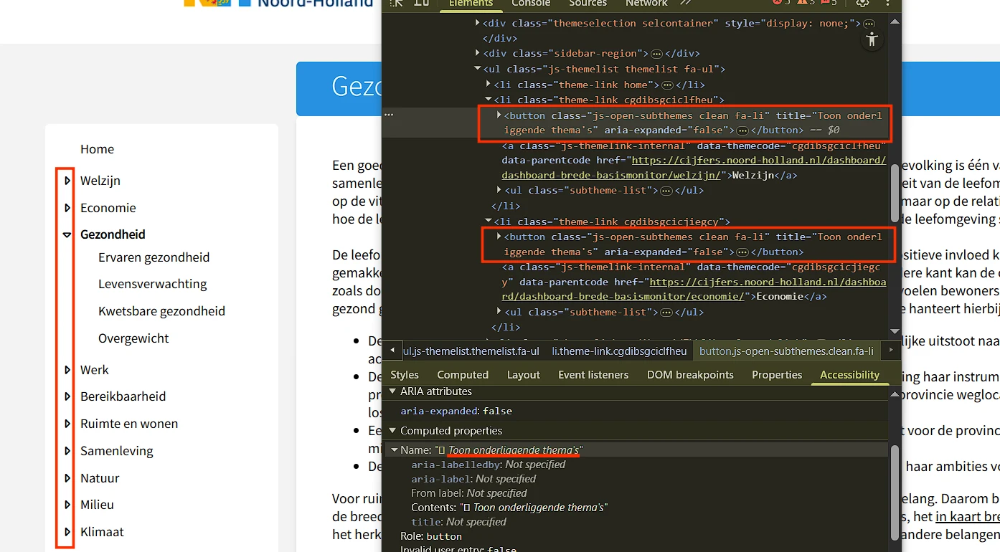
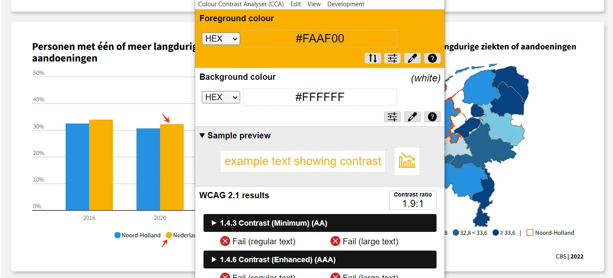
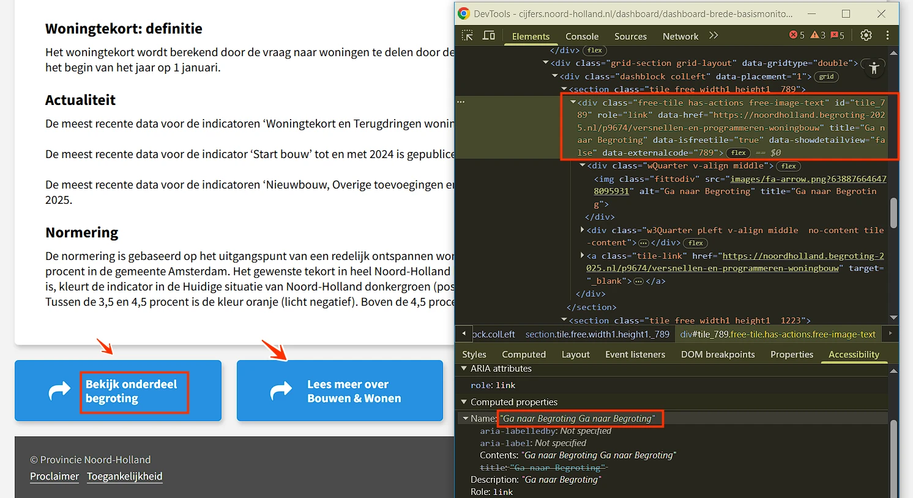
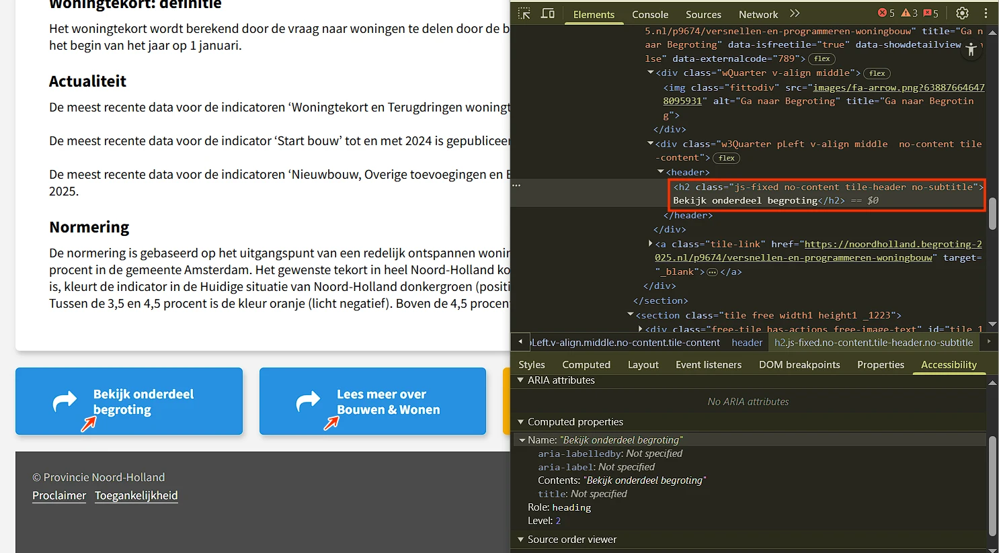
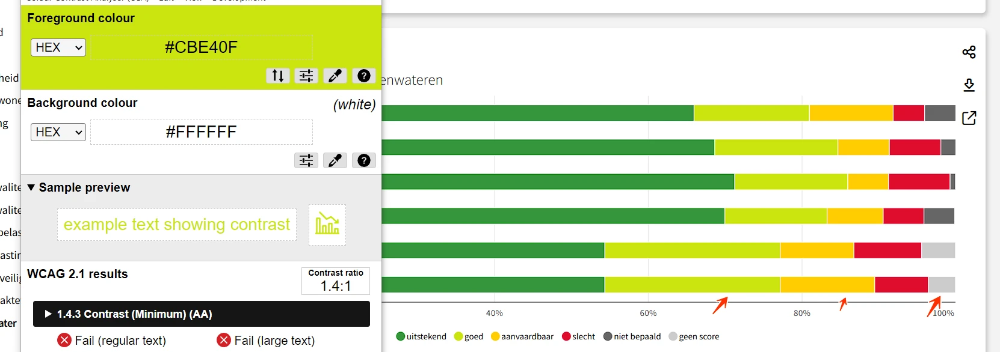

Link naar pagina: https://cijfers.noord-holland.nl/dashboard/dashboard-brede-basismonitor/bedrijventerreinen Geen nieuwe bevindingen.
Samenvatting
Wij hebben de content van de website cijfers.noord-holland.nl onderzocht tussen 6 en 16 oktober 2025. Op dit moment zijn 24 van de 33 succescriteria als voldoende beoordeeld. In dit rapport lees je wat er bij de overige 9 nog fout gaat, en hoe je dat kunt verbeteren.
In opdracht van

-
Voldoet
-
Afgekeurd
55
Totaal
- voldoet
Impact
Klein: 0
Medium: 0
Groot: 0
Type
Content: 0
Techniek: 0
Waarneembaar
- van 20
Bedienbaar
- van 20
Begrijpelijk
- van 13
Robuust
- van 2
Deze SC zijn afgekeurd:
Over dit onderzoek
- Onderzocht door
- Proper Access
- Opdrachtgever
- provincie Noord-Holland
- Leverancier techniek
- Swing
- Datum rapport
- 16 oktober 2025
- Standaard
- WCAG 2.2
- Methodologie
- WCAG-EM
Scope van het onderzoek
- Alle pagina's op de website cijfers.noord-holland.nl
Buiten scope:
- Subwebsite(s) waarbij de HTML en/of het systeem afwijkt van de onderzochte website
- De van derden afkomstige inhoud (wettelijke uitzondering voor de overheid)
- Kaarten en kaartapplicaties
Basisniveau toegankelijkheidsondersteuning
- Mozilla Firefox, versie 142
- Google Chrome, versie 140
- Apple Safari, versie 18
- NVDA schermlezer in combinatie met Firefox
- VoiceOver schermlezer in combinatie met Safari
- Andere gangbare browsers en hulpapparatuur
Technologieën van de website
- HTML
- CSS
- JavaScript
- WAI-ARIA
- SVG
Voortgang opgeloste bevindingen
Samenwerken met je team
Exporteer alle bevindingen als CSV-bestand. Je kunt het in een (online) spreadsheet inladen om met je team samen te werken.
Importeer in Jira
Exporteer alle bevindingen als Jira-compatibel CSV-bestand. Je kunt het direct importeren via Jira > Issues > Import issues from CSV.
Zelf bijhouden in de browser
Houd per bevinding bij of het is opgelost. Je voortgang wordt opgeslagen in jouw browser. Niemand anders kan je resultaat zien.
0 van
0 opgelost
Gevonden problemen
Filter bevindingen op:
Impact:
Type:
Status:
Geen bevindingen gevonden voor dit filter.
Link naar pagina: https://cijfers.noord-holland.nl/dashboard/dashboard-brede-basismonitor/betaalbaarheid-wonen Geen nieuwe bevindingen.
Link naar pagina: https://cijfers.noord-holland.nl/dashboard/dashboard-brede-basismonitor/biodiversiteit Geen nieuwe bevindingen.
Link naar pagina: https://cijfers.noord-holland.nl
#1 - Alleen kleur gebruikt in legenda bij grafiek om informatie te geven

Op deze pagina staat een wiel met links. Deze links hebben niet de juiste toegankelijke rol. Elk HTML-element heeft standaard een bepaalde rol. Dit betekent dat het element bepaalde eigenschappen en functies heeft om informatie aan de bezoeker te geven of om informatie van de bezoeker te ontvangen. De rol bepaalt dus wat het element doet. Schermlezers en andere hulpmiddelen moeten de correcte rol van elk element op een webpagina kennen. Zo kunnen ze op een slimme manier met het element omgaan en aan de bezoeker uitleggen wat het element doet.
Oplossing:
Zorg dat de link de juiste rol heeft door een van de onderstaande oplossingen toe te passen:
- Het
a-element gebruiken: als dit nog niet zo is, gebruik dan heta-element om de link te maken. Dit element heeft standaard al de rol van link. role=”link”toevoegen: als er een ander element voor de link is gebruikt (meestal niet aan te raden), voeg dan het attribuutrole=”link”toe om de rol van dit element expliciet te definiëren.
#2 - Afbeelding zonder tekstalternatief is de enige inhoud van een link

Op deze pagina staat een wiel met links en een legenda. Sommige kleurcombinaties hebben onvoldoende contrast. Bijvoorbeeld lichtgroen (#C3DB75) op een witte achtergrond heeft een contrastratio van 1,5:1. Bruin (#E69138) op een witte achtergrond heeft een contrastratio van 2,5:1. Lichtroze (#FCE5CD) op een witte achtergrond heeft een contrastratio van 1,2:1.
Oplossing:
Zorg ervoor dat het contrast tussen informatie-elementen minimaal 3,0:1 is, zodat bezoekers ze van elkaar kunnen onderscheiden. Controleer of alle kleuren voldoende contrast hebben.
Link naar pagina: https://cijfers.noord-holland.nl/dashboard/dashboard-brede-basismonitor/gezondheid
#3 - Knoppen met dezelfde tekst hebben een andere functie

- de pagina https://cijfers.noord-holland.nl/dashboard/dashboard-brede-basismonitor/kwetsbare-gezondheid,
- op de pagina https://cijfers.noord-holland.nl/dashboard/dashboard-brede-basismonitor/ruimte-en-wonen,
- op de pagina https://cijfers.noord-holland.nl/dashboard/dashboard-brede-basismonitor/klimaat en op andere pagina’s.
Oplossing:
Dit kan bijvoorbeeld worden opgelost door de naam van de sectie die de knop opent toe te voegen aan de toegankelijke naam “Toon onderliggende thema's.”
Link naar pagina: https://cijfers.noord-holland.nl/dashboard/dashboard-brede-basismonitor/innovatiekracht Geen nieuwe bevindingen.
Link naar pagina: https://cijfers.noord-holland.nl/dashboard/dashboard-brede-basismonitor/klimaat Geen nieuwe bevindingen.
Link naar pagina: https://cijfers.noord-holland.nl/dashboard/dashboard-brede-basismonitor/kwetsbare-gezondheid
#4 - Alleen kleur gebruikt in legenda bij grafiek
Op deze pagina wordt alleen kleur gebruikt in diagrammen en kaarten om informatie over te brengen. Zie bijvoorbeeld de gele en blauwe kleuren in het diagram. Alleen als je de kleuren kunt zien en van elkaar kunt onderscheiden, zie je welke balk / lijn bij welke categorie in de legenda hoort. Hetzelfde probleem komt voor
- op de pagina https://cijfers.noord-holland.nl/dashboard/dashboard-brede-basismonitor/woningtekort,
- op de pagina https://cijfers.noord-holland.nl/dashboard/dashboard-brede-basismonitor/rijksmonumenten,
- op de pagina https://cijfers.noord-holland.nl/dashboard/dashboard-brede-basismonitor/woningbouwplannen en op andere pagina’s.
Oplossing:
Gebruik naast kleur bijvoorbeeld ook verschillende soorten arcering.
#5 - Kleurcontrast tussen lijnen of balken in grafiek is niet voldoende

- op de pagina https://cijfers.noord-holland.nl/dashboard/dashboard-brede-basismonitor/woningtekort,
- op de pagina https://cijfers.noord-holland.nl/dashboard/dashboard-brede-basismonitor/rijksmonumenten,
- op de pagina https://cijfers.noord-holland.nl/dashboard/dashboard-brede-basismonitor/woningbouwplannen en op andere pagina’s.
Oplossing:
Zorg dat het contrast tussen informatieve elementen van een grafiek minimaal 3,0:1 is, zodat bezoekers ze van elkaar kunnen onderscheiden. Controleer of alle kleuren in de grafiek voldoende contrast hebben.
strong-element in plaats van kop-element
Op deze pagina zijn de volgende teksten onjuist opgemaakt met <strong> in plaats van met de juiste kop-elementen: “Regio's & Gemeenten”, “Kwetsbare gezondheid: definitie”, “Actualiteit” en “Normering”.
Het strong-element is niet bedoeld om koppen mee te markeren.
Je moet dat altijd doen met een kop-element, zoals h2. Koppen gebruik je om een tekst te structureren. Alleen als je ze als kop markeert met een kop-element, begrijpt hulpsoftware die betekenis. Het strong-element gebruik je wel als je nadruk wilt geven aan enkele woorden of een zinsdeel.
Hetzelfde probleem komt voor op
- de pagina https://cijfers.noord-holland.nl/dashboard/dashboard-brede-basismonitor/woningtekort, bijvoorbeeld “Terugdringen woningtekort”;
- op de pagina https://cijfers.noord-holland.nl/dashboard/dashboard-brede-basismonitor/rijksmonumenten, bijvoorbeeld “Aantal objecten met een onderhoudsbeoordeling: definitie”;
- op de pagina https://cijfers.noord-holland.nl/dashboard/dashboard-brede-basismonitor/woningbouwplannen, bijvoorbeeld “Regio's”; en op andere pagina’s.
Oplossing:
Verwijder het strong-element en gebruik de juiste kop-elementen om deze koppen te markeren, zoals h2 of h3.
Link naar pagina: https://cijfers.noord-holland.nl/dashboard/dashboard-brede-basismonitor/luchtkwaliteit-no2 Geen nieuwe bevindingen.
Link naar pagina: https://cijfers.noord-holland.nl/content/Toegankelijkheid Geen nieuwe bevindingen.
Link naar pagina: https://cijfers.noord-holland.nl/dashboard/dashboard-brede-basismonitor/rijksmonumenten Geen nieuwe bevindingen.
Link naar pagina: https://cijfers.noord-holland.nl/dashboard/dashboard-brede-basismonitor/ruimte-en-wonen Geen nieuwe bevindingen.
Link naar pagina: https://cijfers.noord-holland.nl/dashboard/dashboard-brede-basismonitor/woningbouwplannen Geen nieuwe bevindingen.
Link naar pagina: https://cijfers.noord-holland.nl/dashboard/dashboard-brede-basismonitor/woningtekort
#6 - Zichtbare linktekst komt niet terug in toegankelijke naam

- op de pagina https://cijfers.noord-holland.nl/dashboard/dashboard-brede-basismonitor/rijksmonumenten, bijvoorbeeld “Bekijk onderdeel begroting”;
- op de pagina https://cijfers.noord-holland.nl/dashboard/dashboard-brede-basismonitor/woningbouwplannen, bijvoorbeeld “Bekijk onderdeel begroting”;
- op de pagina https://cijfers.noord-holland.nl/dashboard/dashboard-brede-basismonitor/biodiversiteit, bijvoorbeeld “Bekijk onderdeel begroting”; en op andere pagina’s.
Oplossing:
Voeg de zichtbare tekst toe aan de toegankelijke naam, bij voorkeur vooraan. Bijvoorbeeld: ”Bekijk onderdeel begroting - Ga naar Begroting”`.
#7 - Decoratieve afbeelding is niet verborgen voor schermlezers
Op deze pagina staan boven de footer links met decoratieve pijlpictogrammen, bijvoorbeeld naast de tekst “Bekijk onderdeel begroting”. De alt-tekst voor het pictogram is “Ga naar Begroting”. Een decoratieve afbeelding geeft geen extra informatie en moet daarom verborgen worden voor schermlezers. Hetzelfde probleem komt voor
- op de pagina https://cijfers.noord-holland.nl/dashboard/dashboard-brede-basismonitor/rijksmonumenten, bijvoorbeeld bij “Bekijk onderdeel begroting”;
- op de pagina https://cijfers.noord-holland.nl/dashboard/dashboard-brede-basismonitor/woningbouwplannen, bijvoorbeeld bij “Bekijk onderdeel begroting”;
- op de pagina https://cijfers.noord-holland.nl/dashboard/dashboard-brede-basismonitor/biodiversiteit, bijvoorbeeld bij “Bekijk onderdeel begroting”; en op andere pagina’s.
Oplossing:
Je kunt dit op verschillende manieren bereiken:
- Voor
img-elementen gebruik je een leegalt-attribuut:alt=””. - Met
aria-hidden=”true”kun je decoratieve afbeeldingen verbergen voor schermlezers.
#8 - Kleurcontrast van tekst is te laag (tekst kleiner dan 19px)
Op deze pagina staat boven de footer witte tekst op een blauwe achtergrond (#2891E1), bijvoorbeeld “Bekijk onderdeel begroting”. De contrastratio is te laag: 3,4:1.
Hetzelfde probleem komt voor
- op de pagina https://cijfers.noord-holland.nl/dashboard/dashboard-brede-basismonitor/rijksmonumenten, bijvoorbeeld “Bekijk onderdeel begroting”;
- op de pagina https://cijfers.noord-holland.nl/dashboard/dashboard-brede-basismonitor/woningbouwplannen, bijvoorbeeld “Bekijk onderdeel begroting”;
- op de pagina https://cijfers.noord-holland.nl/dashboard/dashboard-brede-basismonitor/biodiversiteit, bijvoorbeeld “Bekijk onderdeel begroting”; en op andere pagina’s.
Oplossing:
Deze tekst is kleiner dan 19px, daarom moet het contrast met de achtergrondkleur minimaal 4,5:1 zijn. Op deze pagina staat een instructie die uitlegt hoe je kleurcontrast kan testen: https://properaccess.nl/hoe-test-ik-kleurcontrast/.
#9 - Kleurcontrast van tekst is te laag (tekst kleiner dan 19px)
Op deze pagina staat boven de footer witte tekst op een gele achtergrond (#FAAF00), bijvoorbeeld “Bekijk Dashboard Wonen”. De contrastratio is te laag: 1,9:1.
Hetzelfde probleem komt voor
- op de pagina https://cijfers.noord-holland.nl/dashboard/dashboard-brede-basismonitor/woningbouwplannen, bijvoorbeeld “Bekijk Monitor Plancapaciteit”;
- op de pagina https://cijfers.noord-holland.nl/dashboard/dashboard-brede-basismonitor/zwemwater, bijvoorbeeld “Ontdek Zwemwater.nl”;
- op de pagina https://cijfers.noord-holland.nl/dashboard/dashboard-brede-basismonitor/bedrijventerreinen, bijvoorbeeld “Bekijk Dashboard Bedrijventerreinen”; en op andere pagina’s.
Oplossing:
Deze tekst is kleiner dan 19px, daarom moet het contrast met de achtergrondkleur minimaal 4,5:1 zijn. Op deze pagina staat een instructie die uitlegt hoe je kleurcontrast kan testen: https://properaccess.nl/hoe-test-ik-kleurcontrast/.
#10 - Kop-element gebruikt voor tekst die geen kop is

- op de pagina https://cijfers.noord-holland.nl/dashboard/dashboard-brede-basismonitor/rijksmonumenten, bijvoorbeeld bij “Bekijk onderdeel begroting”;
- op de pagina https://cijfers.noord-holland.nl/dashboard/dashboard-brede-basismonitor/woningbouwplannen, bijvoorbeeld bij “Bekijk onderdeel begroting”;
- op de pagina https://cijfers.noord-holland.nl/dashboard/dashboard-brede-basismonitor/biodiversiteit, bijvoorbeeld bij “Bekijk onderdeel begroting”; en op andere pagina’s.
Oplossing:
Verwijder het h2-element en gebruik een ander element, zoals een p-element. De gewenste stijl kun je met CSS toevoegen. Op deze pagina staat een instructie hoe zelf koppen op een webpagina kan testen: https://properaccess.nl/zo-controleer-je-de-koppenstructuur-van-je-website/.
#11 - Het diagram heeft geen tekstalternatief
Op deze pagina staan onder de koppen “Gerealiseerde woningen” en “Bouwvergunningen en Start bouw” diagrammen. Deze diagrammen hebben geen toegankelijk tekstalternatief. De informatie die in het diagram of de kaart wordt weergegeven, moet ook in tekstvorm op de pagina of in toegankelijke vorm via een link in de buurt worden aangeboden. Hetzelfde probleem komt voor
- op de pagina https://cijfers.noord-holland.nl/dashboard/dashboard-brede-basismonitor/rijksmonumenten onder de kop “Staat van onderhoud rijksmonumenten”;
- op de pagina https://cijfers.noord-holland.nl/dashboard/dashboard-brede-basismonitor/woningbouwplannen onder de koppen “Woningbouwplannen” en “Woningbouwplannen hard/zacht”;
- op de pagina https://cijfers.noord-holland.nl/dashboard/dashboard-brede-basismonitor/zwemwater onder “Kwaliteit zwemwaterlocatie”; en op andere pagina’s.
Oplossing:
Zorg ervoor dat de informatie die in het diagram of de kaart wordt weergegeven een toegankelijk tekstalternatief heeft.
Link naar pagina: https://cijfers.noord-holland.nl/dashboard/dashboard-brede-basismonitor/zwemwater
#12 - Kleurcontrast tussen lijnen of balken in grafiek is niet voldoende

Op deze pagina staat onder de kop “Kwaliteit zwemwaterlocatie” een iframe met een diagram. Het title-attribuut is “Kwaliteit zwemwaterlocatie”.
Iframes moeten een goede beschrijving hebben. Die zet je meestal in het title-attribuut van het iframe. Er moet in staan welk type inhoud het is (bijvoorbeeld een diagram of video), en waar het inhoudelijk over gaat. Deze beschrijving van de inhoud moet uniek en betekenisvol zijn. Door de beschrijving kunnen bezoekers met hulpsoftware beslissen of het de moeite waard is om de inhoud van het iframe te verkennen.
Oplossing:
Verander de tekst van het title-attribuut zodat duidelijk is welk type inhoud het iframe bevat, en waar het inhoudelijk over gaat.
Over dit onderzoek
Leeswijzer
Onze rapporten zijn anders. Bij het bespreken van de gevonden problemen volgen wij niet de structuur van de norm, maar die van jouw website of app. Hierdoor kun je gewoon per pagina of scherm aan de slag gaan. Wel zo makkelijk! Je vindt verderop een overzicht van alle pagina’s met problemen.
We geven je bij elk gevonden issue een paar voorbeelden, maar niet een complete lijst. Controleer zelf of het probleem ook nog op andere plekken voorkomt. Zie het rapport als een leidraad.
Gebruikte norm
Dit onderzoek laat zien in hoeverre de website op dit moment voldoet aan WCAG 2.2, niveau A en AA. WCAG staat voor Web Content Accessibility Guidelines. Dit is de internationale norm voor digitale toegankelijkheid. De Europese norm EN 301 549 bevat alle eisen van WCAG op niveau A en AA.
In dit rapport hebben we korte beschrijvingen van de succescriteria uit de norm opgenomen, met een algemene uitleg erbij. Wil je ze helemaal lezen? Bekijk dan de documentatie van WCAG.
Gebruikte onderzoeksmethode
We gebruiken de onderzoeksmethode WCAG-EM van het W3C. Het proces ziet er als volgt uit:
- vaststellen wat binnen en buiten scope valt
- vaststellen welke technologieën zijn gebruikt
- steekproef (sample) samenstellen
- steekproef onderzoeken
- gevonden issues beschrijven
Het grootste deel van het onderzoek doen we met de hand. Voor een deel van de toegankelijkheidseisen gebruiken we automatische tools als ondersteuning, zoals axe-core en Chrome Developer Tools.
Belangrijk om te weten
Dit rapport helpt je om de toegankelijkheid van je website te verbeteren. Maar let op: het is geen definitieve, volledige lijst van alle aanwezige toegankelijkheidsproblemen. Dat zit zo:
Het is een steekproef
Ten eerste is het onderzoek gebaseerd op een steekproef. Die is op een betrouwbare manier genomen, en de meeste problemen zullen daardoor zeker aan het licht komen. Toch kan een probleem net buiten de steekproef vallen. Bij een volgend onderzoek kan het wel ontdekt worden.
Op basis van falsificatie
We beoordelen vanuit het principe van falsificatie. Dat houdt in dat we proberen te bewijzen dat iets niet waar is, in plaats van te bevestigen dat het klopt. ‘Voldoet’ betekent daarom dat we geen reden hebben gevonden om een punt af te keuren. Maar als we later wél een reden vinden, kan het alsnog worden afgekeurd.
Voortschrijdend inzicht
Het komt voor dat de beoordeling van een succescriterium op detailniveau verandert. De norm beschrijft namelijk niet élk mogelijk scenario. Samen met andere onderzoeksbureaus overleggen we hoe we met bepaalde situaties omgaan. Zo kan iets dat nu wordt afgekeurd, soms bij een volgend onderzoek worden goedgekeurd en andersom.
Oplossen leidt tot nieuw probleem
Ten slotte kan het gebeuren dat bij het oplossen van een probleem onbedoeld een nieuw toegankelijkheidsprobleem ontstaat. Dat komt dan bij een volgend onderzoek pas naar voren.
Hoe werkt dit rapport?
Bevindingen bekijken en filteren
Alle gevonden toegankelijkheidsproblemen staan onder Gevonden problemen. Je kunt de bevindingen filteren op:
- Impact (Groot, Medium, Klein, Advies) — hoe ernstig is het probleem voor de gebruiker?
- Type (Content, Techniek) — moet de inhoud of de techniek worden aangepast?
- Status (Open, Opgelost) — welke problemen zijn al verholpen?
Voortgang bijhouden
Je kunt je voortgang op twee manieren bijhouden:
- CSV-export — exporteer alle bevindingen als CSV-bestand en laad het in een (online) spreadsheet om met je team samen te werken.
- Jira-export — exporteer alle bevindingen als Jira-compatibel CSV-bestand. Importeer het via Jira > Issues > Import issues from CSV. Bevindingen worden aangemaakt als bugs met prioriteit op basis van impact.
- Registreer in de browser — activeer deze optie om per bevinding bij te houden of het is opgelost. Je voortgang wordt opgeslagen in je browser. Niemand anders kan je resultaat zien. Let op: de voortgang is gekoppeld aan je browser. Als je een andere browser of een ander apparaat gebruikt, begint de telling opnieuw.
- Plan van aanpak — download een geprioriteerd plan van aanpak om de gevonden problemen stap voor stap op te lossen. Dit is beschikbaar bij audits vanaf maart 2026.
Link naar een specifieke bevinding delen
Bij elke bevinding verschijnt een link-icoon wanneer je er met de muis overheen gaat. Klik op dit icoon om de directe link naar die bevinding te kopiëren. Je kunt deze link plakken in een e-mail of chatbericht, bijvoorbeeld om een vraag te stellen aan Proper Access over een specifiek punt.